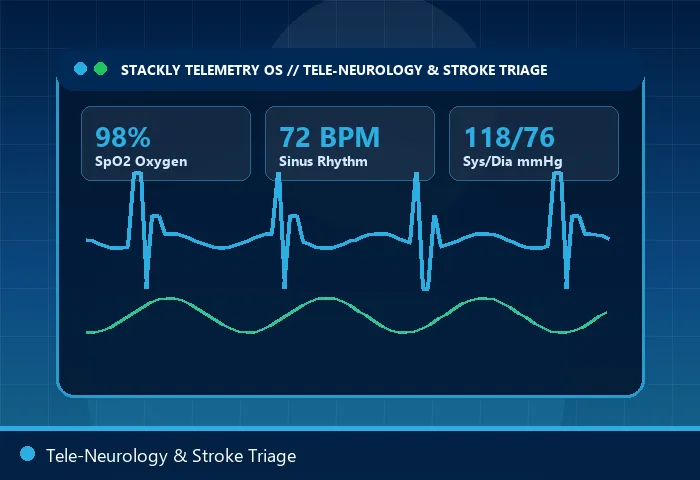
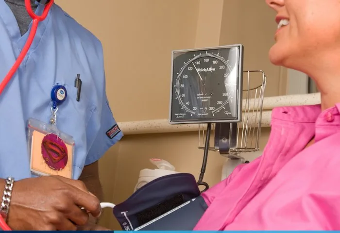
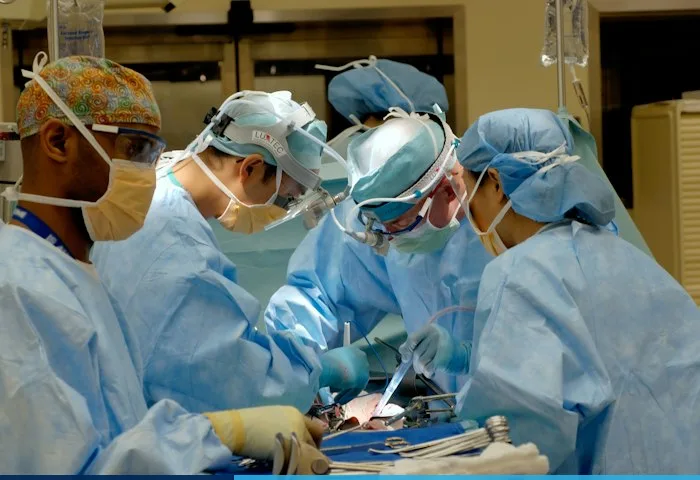
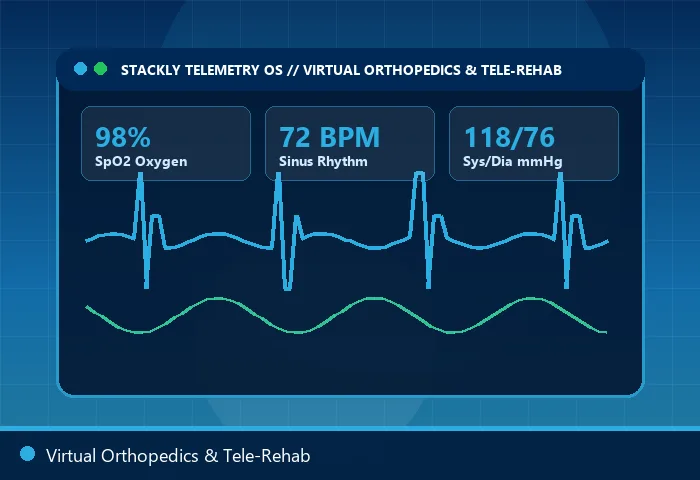
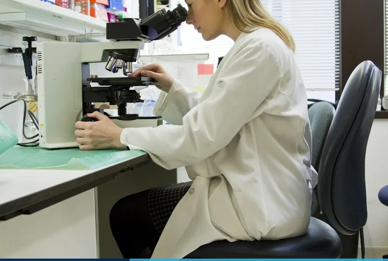

Specialized Virtual Care Units
Each department combines sub-specialist UK consultants with dedicated home diagnostic sensors for hospital-level accuracy.
Tele-Cardiology
24/7 arrhythmia monitoring, 12-lead ECG patch review, hypertension titration, and post-stent care.

Wait: 10 MinTele-Neurology
Migraine prevention, epilepsy management, neuropathy assessments, and post-stroke speech tele-rehab.
Teledermatology
Macro dermatoscopy mole screening, custom prescription acne/rosacea therapy, and biological eczema care.
Tele-Psychiatry & CBT
Confidential video psychiatry, adult ADHD assessments, anxiety/burnout CBT therapy, and sleep medicine.

Wait: 4 MinVirtual Pediatrics
24/7 infant fever & rash triage, digital ear otoscope checks, allergy care, and childhood development.

Wait: 9 MinTele-Endocrinology
Continuous glucose monitor (CGM) cloud sync, Type 1 & 2 diabetes optimization, and thyroid hormone panels.
Tele-Pulmonology
Connected Bluetooth spirometry, smart inhaler asthma tracking, COPD action plans, and sleep apnea CPAP care.

Wait: 11 MinVirtual Orthopedics
Sports injury MRI review, computer-vision joint mobility tracking, and guided post-surgical physiotherapy.
Interactive Department Care Pathways
Select any specialty tab below to inspect its home diagnostic device kit, turnaround time, and clinical escalation pathway.
- CARDIAC RPM
- STROKE & NEURO
- SKIN ONCOLOGY
- ACUTE PEDIATRICS
- DIABETES CGM
- ASTHMA & COPD
Cardiac Telemetry & Arrhythmia Pathway
Patients receive a waterproof 12-lead ECG chest patch and cellular blood pressure monitor via next-day UK courier. Continuous beat-to-beat data is analyzed by our Harley Street cardiac physiologists 24/7.
- Instant AFib & Bradycardia Alerts
- Same-Day Beta-Blocker Titration
- Direct Echocardiogram Booking
- 24/7 Cardiologist On-Call
Neurological Triage & Cognitive Care
High-frame-rate 4K video allows our neurologists to evaluate cranial nerve function, gait, tremor frequency, and speech fluency remotely while reviewing your hospital brain MRI scans live on screen.
- CGRP Migraine Biologic Prescribing
- Wearable Seizure & Sleep Tracking
- Neuro-Rehab Speech Coaching
- Rapid EEG Referral Network
20x Polarized Teledermatology
Using our clip-on smartphone dermatoscope lens, patients capture polarized sub-surface pigment images of suspicious lesions for consultant dermatologist reporting within 4 hours.
- 4-Hour Pigmented Lesion Triage
- Bespoke Compounded Skin Creams
- Isotretinoin Remote Monitoring
- Priority Biopsy Fast-Track
Rapid Pediatric Night & Weekend Triage
Parents connect in under 4 minutes with a consultant pediatrician able to inspect tympanic membranes via home digital otoscope, assess respiratory effort, and issue weight-calculated liquid antibiotics.
- Sub-4-Minute Pediatric Access
- Home Digital Ear & Throat Exam
- Cow's Milk Allergy & Reflux Care
- 24-Hour Pharmacy Courier
Continuous Glucose & Metabolic Clinic
Link your FreeStyle Libre or Dexcom sensor to our cloud dashboard. Our endocrinologists optimize insulin-to-carb ratios, GLP-1 metabolic therapy, and thyroid replacement with finger-prick home HbA1c kits.
- Real-Time Time-in-Range Analytics
- Medical Weight & GLP-1 Clinic
- Home Thyroid & Cortisol Panels
- Registered Dietitian Video Calls
Smart Spirometry & Respiratory Care
Monitor asthma, COPD, and post-infectious cough using ultrasonic home spirometers and overnight ring oximeters that stream flow-volume loops directly to your pulmonologist.
- Cloud FEV1 / FVC Lung Tracking
- Home Sleep Apnea Polygraphy
- Biologic Severe Asthma Review
- Pulmonary Rehab Video Classes
AI-Assisted Pre-Consultation Triage & Routing
Before your video call begins, our UKCA-marked clinical triage engine analyzes your reported symptoms, medical history, and live wearable vitals to route you to the exact sub-specialist department at the right urgency tier.
Red-Flag Triage
Connected in <2 mins to emergency tele-physician with ambulance dispatch integration.
Same-Hour Consult
Connected in <8 mins for acute infections, pediatric fever, migraines, and flare-ups.
Scheduled Review
40-minute deep consultant review for chronic disease, imaging, and second opinions.

Home Blood Testing & Nationwide Nurse Phlebotomy
Need blood tests, throat swabs, or urine culture during your virtual consultation? Your clinician orders the exact panel in one click—dispatching either a painless Tasso capillary kit or a mobile phlebotomy nurse to your home or office.
- 24-Hour UKAS Lab Turnaround
- Mobile Nurse Visit Anywhere in UK
- Interactive Biomarker Trend Graphs
- Partner MRI / CT Scan Slots in 48h
Stackly Virtual Departments vs. Traditional Clinics
See how our connected telemedicine departments save time, reduce costs, and elevate clinical continuity.
| Clinical Care Metric | Stackly Telemedicine UK | Traditional In-Person Clinic |
|---|---|---|
| Average Wait Time for GP / Triage | Under 8 Minutes (24/7) | 7 to 14 Days |
| Senior Consultant Appointment Access | Same-Day or Next-Day | 4 to 12 Weeks |
| Prescription Fulfilment | Instant Barcode Token / 2-Hr Courier | Paper Script & Queueing |
| Vital Signs & ECG Tracking | Continuous 24/7 Home Telemetry | Single Spot-Check in Clinic |
| Post-Visit Clinician Messaging | 7 Days Included Free | Requires New Booking Fee |
Multi-Disciplinary Team (MDT) Virtual Conferences
Complex conditions don't fit neatly into a single specialty. We convene multiple consultants on a single video call with you.
Covered by Leading UK Private Health Insurers
We process direct digital pre-authorizations with Bupa, AXA Health, Vitality, Aviva, WPA, and Cigna—or book instantly via self-pay with itemized receipts.
100%
Direct Claim Sync0 £
Admin SurchargeInstant
NHS GP Letters24/7
Referral DeskDepartment & Referral Questions
Common questions about specialist referrals, home medical devices, and virtual physical examinations.
Do I need a GP referral letter to book a specialist department?
How do I receive the home ECG, spirometer, or dermatoscope kit?
What happens if my virtual specialist decides I need an in-person scan or procedure?
Book a Specialist Department Video Consultation
Select your required medical department below. Our clinical triage desk will match you with the appropriate consultant and confirm your 4K video slot immediately.
UK Clinical Command
221B Harley Street, Marylebone, London W1G 9QT, United Kingdom
24/7 Department Triage
Referrals & Lab Desk
Department Appointment Request
All fields are required. Name accepts alphabets only; Phone accepts numbers only; Past dates are restricted.